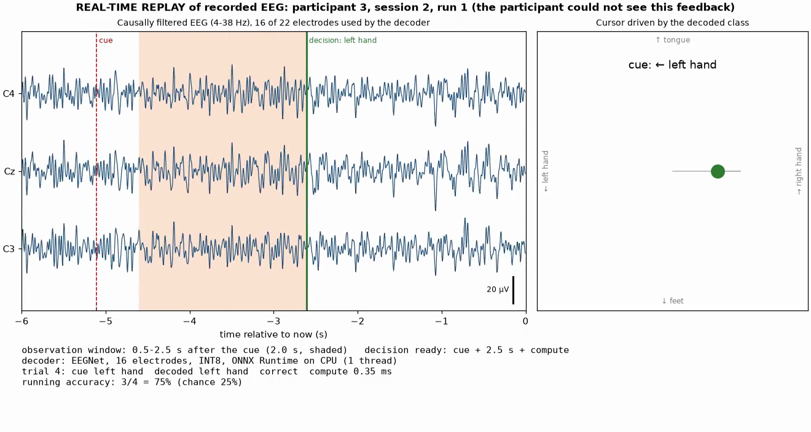

6 of 8
trials correct, participant 3, day 2
0.35 ms
compute per decision, INT8
Streamed windows equal the offline ones to 10⁻⁶ µV.
Replay only: the participant never saw this feedback.
Peiye Li · COMP 690 · 15 · click the frame to play the 62-s replay · participant 3 is one of the stronger decoders (83%)